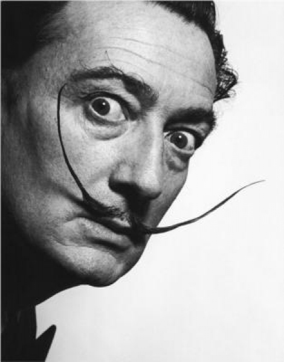
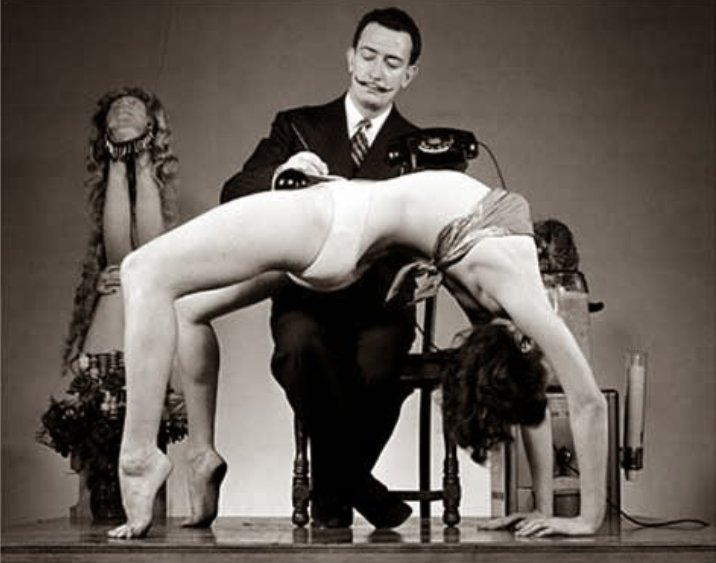

Salvador Felip Jacint Dalí i Domènech (11. května 1904 Figueres – 23. ledna 1989 Figueres) byl katalánský malíř, který se proslavil svými surrealistickými díly. Mezi pařížské surrealisty byl přijatý v roce 1929 po natočení filmu Andaluský pes, na kterém spolupracoval s Luisem Buñuelem.
Později se s nimi rozešel, protože byl považován za příliš komerčního umělce. Mnohé jeho obrazy jsou založeny na snové imaginaci. Předměty každodennosti na nich dostávají nezvyklé formy, tak jako např. rozteklé hodinky na obraze Persistence paměti.
Obrazy vzniklé po 2. světové válce jsou klasičtější a v důsledku Dalího konverze ke katolictví mívají náboženské náměty. Jeho obrazy se vyznačují pečlivým kresebným zpracováním a smyslem pro realistický detail. Používal výrazné barvy. Kromě malby a kresby se Dalí také zabýval grafikou, vytvářel sochy, ilustroval knihy, navrhl parfém, designoval šperky, pro divadelní představení navrhoval kostýmy a scénu. Napsal rovněž libreto k baletu a několik autobiografických a beletristických knih. Názory na vlastní tvorbu formuloval v několika studiích a manifestech.

Dalí se narodil ve městě Figueres v Katalánsku 11. května 1904, tedy zhruba devět měsíců po smrti jeho bratra, který zemřel na gastroenteritidu. Nejspíše právě z toho důvodu byli Salvadorovi rodiče přesvědčeni, že je pouhou reinkarnací svého vlastního bratra, čemuž nakonec sám uvěřil. Na tuto skutečnost odkazuje například v obraze Portrét mrtvého bratra (1963).
Od dětství projevoval vlohy pro malířství. Už jako osmiletému mu rodiče zřídili malý ateliér v podkroví bytu. První školení v kresbě získal Dalí na soukromém gymnáziu maristů (Societas Mariae), které navštěvoval od roku 1916. Zde se také seznámil s impresionismem a pointilismem.
V roce 1918 mu místní divadlo uspořádalo výstavu, která vzbudila mezi kritiky zájem. Zajímal se o dějiny malířství a v roce 1919 publikoval v regionálním časopise články o starých mistrech. Roku 1922 byl přijat na Akademii výtvarného umění v Madridu. Na koleji se stali jeho přáteli Federico García Lorca a Luis Buñuel. V roce 1923 však byl pro kritiku vyučujících ze školy na rok vyloučen. Rok nato se na Akademii vrátil, v říjnu 1926 však z ní byl vyloučený definitivně. Odmítl se podrobit zkouškám, protože považoval examinátory za nekompetentní.
Za první republiky bylo v Čechách Dalího dílo mezi umělci, kteří surrealismus sledovali, známé. V časopisu Revue Devětsilu, vydávaného od roku 1927, vycházely reprodukce jeho obrazů. V roce 1932 uspořádal Spolek výtvarných umělců Mánes výstavu s názvem Poesie 1932. Šlo o konfrontaci českého surrealistického umění se zahraničním, na níž byl kromě mnoha jiných zastoupen i Dalí. Akce tak předběhla analogické podniky uspořádané v letech 1936 a 1938 v Londýně a Paříži. Někteří čeští umělci tvořili v té době pod přímým Dalího vlivem. Týká se to malířů Bohdana Laciny, Václava Zykmunda a fotografa Miroslava Háka, zaujatých Dalího paraniocko-kritickou metodou.
V letech po únoru 1948 nebylo možné výtvarné umění nebo literaturu spojenou se surrealismem veřejně publikovat. Ilegální skupina kolem Vratislava Effenbergera proto vydávala samizdaty s názvem Objekt. Druhý z nich z října 1953 představoval antologii surrealistické poezie, ve které byl Dalí rovněž zastoupen. Členové okruhu kolem Effenbergera, manželé Mikuláš Medek a Emila Medková, po roce 1949 navazovali na magický realismus Dalího i René Magritta. Na tytéž umělce odkazuje i část fotografické tvorby Evy Fukové z 2. poloviny 50. let. Dalího výrazný vliv lze vysledovat rovněž na obrazech Evy Švankmajerové.
V roce 1967 proběhla výstava Dalího obrazů v pražské Galerii D (dnes Portheimka Galerie D). Během své návštěvy Paříže v roce 1969 vytvořil sérii portrétů tehdy již slavného Katalánce fotograf Václav Chochola. V Pasáži Jiřího Grossmanna v Praze je umístěna plastika Dalího od sochaře Jana Bernata. V pražské Gallery of Art Prague je stálá expozice, kde jsou vystaveny Dalího obrazy. V prosinci 2019 bylo otevřeno Muzeum Salvadora Dalího v Praze se stálou výstavou Enigma. Muzeum v Opletalově ulici představuje 15 soch ze sbírky italského mecenáše umění Beniamino Leviho, který byl zároveň blízkým přítelem Salvadora Dalího.
